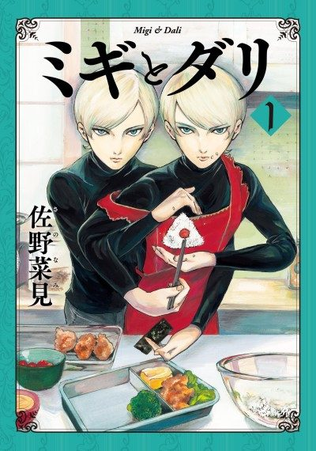

Migi&Dali
ミギとダリ
Twins Migi and Dali pose as a single adopted boy in a wealthy family's home to find out who killed their mother.
The anime covers the whole manga.
7.5AniList score
—Animeter, no votes yet
13episodes
Rate it or report where you stopped
Anime finished. Where does the manga pick up?
StatusFully adapted
The anime adapts the complete manga.
More like Migi&Dali
 Manga Ch. 1278.4
Manga Ch. 1278.4
 Manga Ch. 618.1
Manga Ch. 618.1
 Manga Ch. 488.0
Manga Ch. 488.0
 Manga Ch. 318.1
Manga Ch. 318.1
 Unclear7.5
Unclear7.5
 Unclear8.2
Unclear8.2
 Manga Ch. 908.3
Manga Ch. 908.3
 Film8.1
Film8.1
 Unclear7.6
Unclear7.6
 Done7.3
Done7.3
 Manga Ch. 1098.0
Manga Ch. 1098.0
 Unclear7.5
Unclear7.5